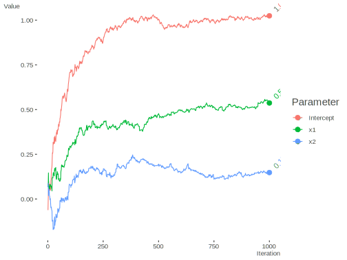
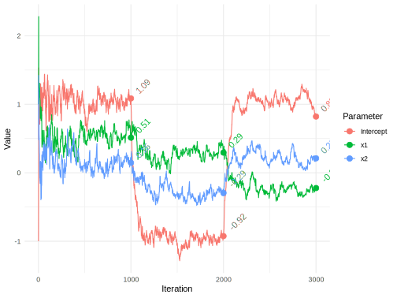
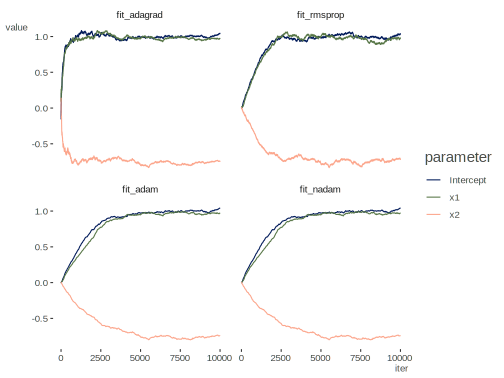

Stochastic Gradient Descent
Here we have ‘online’ learning via stochastic gradient descent. See the standard gradient descent chapter. In the following, we have basic data for standard regression, but in this ‘online’ learning case, we can assume each observation comes to us as a stream over time rather than as a single batch, and would continue coming in. Note that there are plenty of variations of this, and it can be applied in the batch case as well. Currently no stopping point is implemented in order to trace results over all data points/iterations. On revisiting this much later, I thought it useful to add that I believe this was motivated by the example in Murphy’s Probabilistic Machine Learning text.
Data Setup
Create some data for a standard linear regression.
library(tidyverse)
set.seed(1234)
n = 1000
x1 = rnorm(n)
x2 = rnorm(n)
y = 1 + .5*x1 + .2*x2 + rnorm(n)
X = cbind(Intercept = 1, x1, x2)Function
The estimating function using the adagrad approach.
sgd <- function(
par, # parameter estimates
X, # model matrix
y, # target variable
stepsize = 1, # the learning rate
stepsize_tau = 0, # if > 0, a check on the LR at early iterations
average = FALSE # a variation of the approach
){
# initialize
beta = par
names(beta) = colnames(X)
betamat = matrix(0, nrow(X), ncol = length(beta)) # Collect all estimates
fits = NA # Collect fitted values at each point
loss = NA # Collect loss at each point
s = 0 # adagrad per parameter learning rate adjustment
eps = 1e-8 # a smoothing term to avoid division by zero
for (i in 1:nrow(X)) {
Xi = X[i, , drop = FALSE]
yi = y[i]
LP = Xi %*% beta # matrix operations not necessary,
grad = t(Xi) %*% (LP - yi) # but makes consistent with standard gd func
s = s + grad^2 # adagrad approach
# update
beta = beta - stepsize/(stepsize_tau + sqrt(s + eps)) * grad
if (average & i > 1) {
beta = beta - 1/i * (betamat[i - 1, ] - beta) # a variation
}
betamat[i,] = beta
fits[i] = LP
loss[i] = (LP - yi)^2
grad_old = grad
}
LP = X %*% beta
lastloss = crossprod(LP - y)
list(
par = beta, # final estimates
par_chain = betamat, # estimates at each iteration
RMSE = sqrt(sum(lastloss)/nrow(X)),
fitted = LP
)
}Estimation
Set starting values.
starting_values = rep(0, 3)For any particular data you might have to fiddle with the stepsize, perhaps
choosing one based on cross-validation with old data.
fit_sgd = sgd(
starting_values,
X = X,
y = y,
stepsize = .1,
stepsize_tau = .5,
average = FALSE
)
str(fit_sgd)List of 4
$ par : num [1:3, 1] 1.024 0.537 0.148
..- attr(*, "dimnames")=List of 2
.. ..$ : chr [1:3] "Intercept" "x1" "x2"
.. ..$ : NULL
$ par_chain: num [1:1000, 1:3] -0.06208 -0.00264 0.04781 0.09866 0.08242 ...
$ RMSE : num 1.01
$ fitted : num [1:1000, 1] 0.198 1.218 1.379 -0.141 1.358 ...fit_sgd$par [,1]
Intercept 1.0241049
x1 0.5368198
x2 0.1478470Comparison
We can compare to standard linear regression.
# summary(lm(y ~ x1 + x2))
coef1 = coef(lm(y ~ x1 + x2))| Intercept | x1 | x2 | |
|---|---|---|---|
| fit_sgd | 1.024 | 0.537 | 0.148 |
| lm | 1.030 | 0.518 | 0.163 |
Visualize Estimates

Data Set Shift
This data includes a shift of the previous data, where the data fundamentally changes at certain times.
Data Setup
We’ll add data with different underlying generating processes.
set.seed(1234)
n2 = 1000
x1.2 = rnorm(n2)
x2.2 = rnorm(n2)
y2 = -1 + .25*x1.2 - .25*x2.2 + rnorm(n2)
X2 = rbind(X, cbind(1, x1.2, x2.2))
coef2 = coef(lm(y2 ~ x1.2 + x2.2))
y2 = c(y, y2)
n3 = 1000
x1.3 = rnorm(n3)
x2.3 = rnorm(n3)
y3 = 1 - .25*x1.3 + .25*x2.3 + rnorm(n3)
coef3 = coef(lm(y3 ~ x1.3 + x2.3))
X3 = rbind(X2, cbind(1, x1.3, x2.3))
y3 = c(y2, y3)Estimation
We’ll use the same function as before.
fit_sgd_shift = sgd(
starting_values,
X = X3,
y = y3,
stepsize = 1,
stepsize_tau = 0,
average = FALSE
)
str(fit_sgd_shift)List of 4
$ par : num [1:3, 1] 0.821 -0.223 0.211
..- attr(*, "dimnames")=List of 2
.. ..$ : chr [1:3] "Intercept" "x1" "x2"
.. ..$ : NULL
$ par_chain: num [1:3000, 1:3] -1 -0.119 0.624 1.531 1.063 ...
$ RMSE : num 1.57
$ fitted : num [1:3000, 1] 0.836 0.823 0.254 1.479 0.874 ...Comparison
Compare with lm result for each data part.
| Intercept | x1 | x2 | |
|---|---|---|---|
| lm_part1 | 1.030 | 0.518 | 0.163 |
| lm_part2 | -0.970 | 0.268 | -0.287 |
| lm_part3 | 1.045 | -0.236 | 0.242 |
| sgd_part1 | 1.086 | 0.513 | 0.146 |
| sgd_part2 | -0.925 | 0.295 | -0.294 |
| sgd_part3 | 0.821 | -0.223 | 0.211 |
Visualize Estimates
Visualize estimates across iterations.

SGD Variants
The above uses the Adagrad approach for stochastic gradient descent, but there are many variations. A good resource can be found here, as well as this post covering more recent developments. We will compare the Adagrad, RMSprop, Adam, and Nadam approaches.
Data Setup
For this demo we’ll bump the sample size. I’ve also made the coefficients a little different.
library(tidyverse)
set.seed(1234)
n = 10000
x1 = rnorm(n)
x2 = rnorm(n)
X = cbind(Intercept = 1, x1, x2)
true = c(Intercept = 1, x1 = 1, x2 = -.75)
y = X %*% true + rnorm(n)Function
The function now takes a method as input.
sgd <- function(
par, # parameter estimates
X, # model matrix
y, # target variable
stepsize = 1e-2, # the learning rate; suggest 1e-3 for non-adagrad methods
stepsize_tau = 0, # if > 0, a check on the LR at early iterations
type = 'adagrad', # one of adagrad, rmsprop, adam or nadam
average = FALSE # a variation of the approach
){
# initialize
beta = par
names(beta) = colnames(X)
betamat = matrix(0, nrow(X), ncol = length(beta)) # Collect all estimates
fits = NA # Collect fitted values at each point
loss = NA # Collect loss at each point
v = rep(0, length(beta)) # gradient variance (sum of squares)
m = rep(0, length(beta)) # average of gradients for n/adam
eps = 1e-8 # a smoothing term to avoid division by zero
grad_old = rep(0, length(beta))
adagrad <- function(grad) {
v <<- v + grad^2
stepsize/(stepsize_tau + sqrt(v + eps)) * grad
}
rmsprop <- function(grad, grad_old) {
v = .9 * grad_old^2 + (1 - .9) * grad^2
stepsize / sqrt(v + eps) * grad
}
adam <- function(grad, b1 = 0.9, b2 = 0.999, type = 'adam') {
m <<- b1 * m + (1 - b1) * grad
v <<- b2 * v + (1 - b2) * grad^2
if (type == 'adam')
# dividing v and m by 1 - b*^i is the 'bias correction'
stepsize/(sqrt(v / (1 - b2^i)) + eps) * (m / (1 - b1^i))
else
# nadam
stepsize/(sqrt(v / (1 - b2^i)) + eps) * (b1 * m + (1 - b1)/(1 - b1^i) * grad)
}
for (i in 1:nrow(X)) {
Xi = X[i, , drop = FALSE]
yi = y[i]
LP = Xi %*% beta # matrix operations not necessary,
grad = t(Xi) %*% (LP - yi) # but makes consistent with standard gd func
update <-
switch(
type,
adagrad = adagrad(grad),
rmsprop = rmsprop(grad, grad_old),
adam = adam(grad),
nadam = adam(grad, type = 'nadam')
)
# update
beta = beta - update
if (average & i > 1) {
beta = beta - 1/i * (betamat[i - 1, ] - beta) # a variation
}
betamat[i,] = beta
fits[i] = LP
loss[i] = (LP - yi)^2
grad_old = grad
}
LP = X %*% beta
lastloss = crossprod(LP - y)
list(
par = beta, # final estimates
par_chain = betamat, # estimates at each iteration
RMSE = sqrt(sum(lastloss)/nrow(X)),
fitted = LP
)
}Estimation
We’ll now use all four methods for estimation.
starting_values = rep(0, ncol(X))
# starting_values = runif(3, min = -1)
fit_adagrad = sgd(
starting_values,
X = X,
y = y,
stepsize = .1, # suggestion is .01 for many settings, but this works better
average = T
)
fit_rmsprop = sgd(
starting_values,
X = X,
y = y,
stepsize = 1e-3,
type = 'rmsprop'
)
fit_adam = sgd(
starting_values,
X = X,
y = y,
stepsize = 1e-3,
type = 'adam'
)
fit_nadam = sgd(
starting_values,
X = X,
y = y,
stepsize = 1e-3,
type = 'nadam'
)Comparison
We’ll compare our results to standard linear regression and the true values.
| fit | Intercept | x1 | x2 |
|---|---|---|---|
| fit_adagrad | 1.04388 | 0.97485 | -0.74590 |
| fit_rmsprop | 1.03550 | 0.98023 | -0.71598 |
| fit_adam | 1.04294 | 0.97330 | -0.74579 |
| fit_nadam | 1.04302 | 0.97346 | -0.74591 |
| fit_lm | 1.00417 | 0.98509 | -0.75099 |
| true | 1.00000 | 1.00000 | -0.75000 |
Visualize Estimates
We can visualize the route of estimation for each technique. While Adagrad works well for this particular problem, in standard machine learning contexts with possibly millions of parameters, and possibly massive data, it would quickly get to a point where it is no longer updating (the denominator continues to grow). These other techniques are attempts to get around the limitations of Adagrad.

Source
Original code available at https://github.com/m-clark/Miscellaneous-R-Code/blob/master/ModelFitting/stochastic_gradient_descent.R